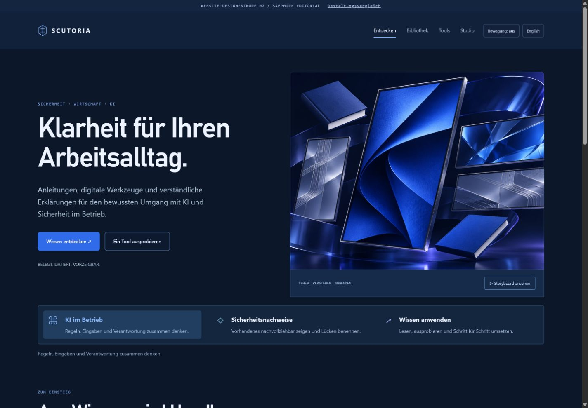
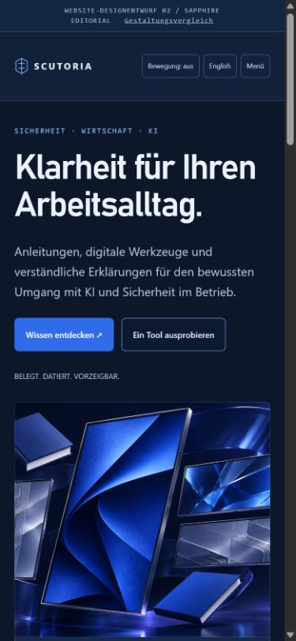
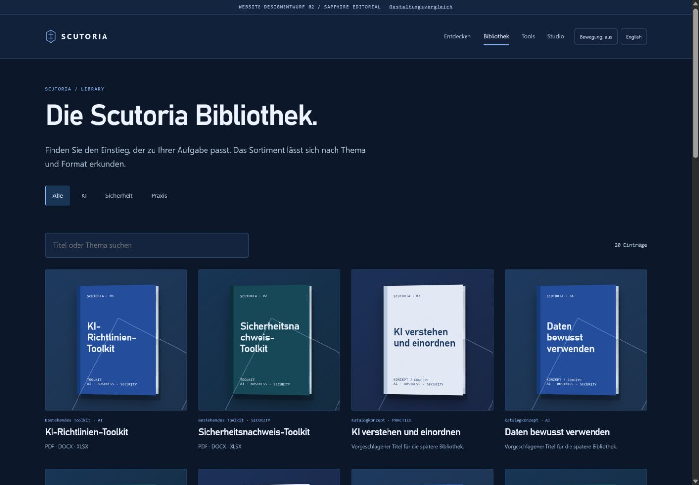
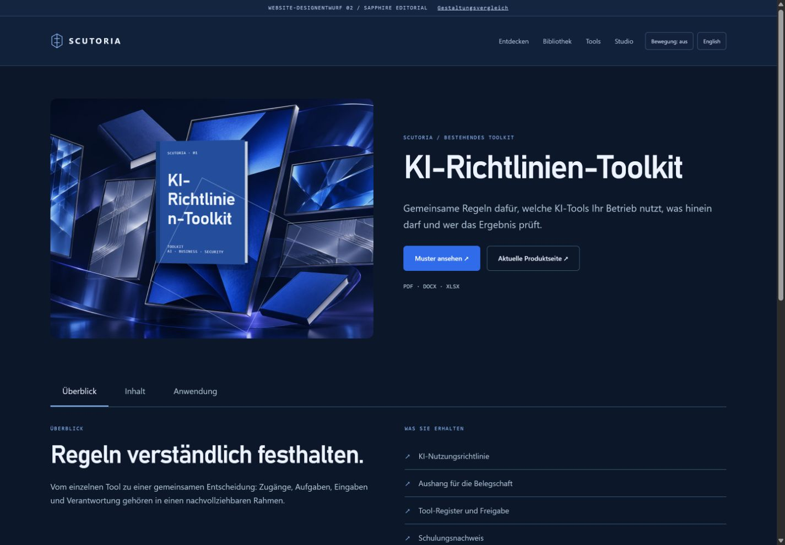
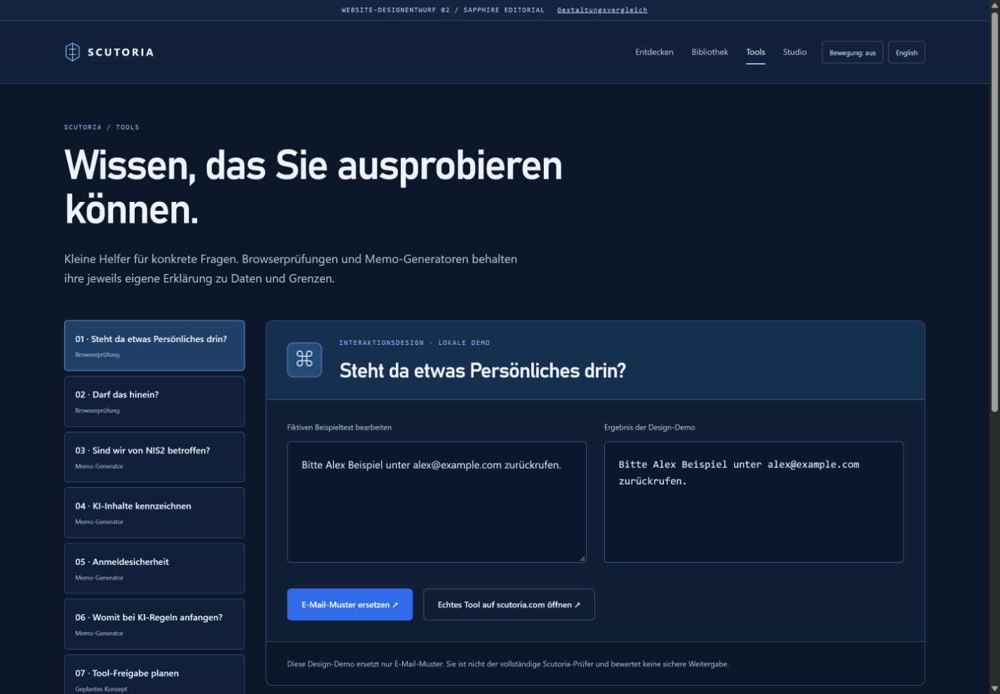
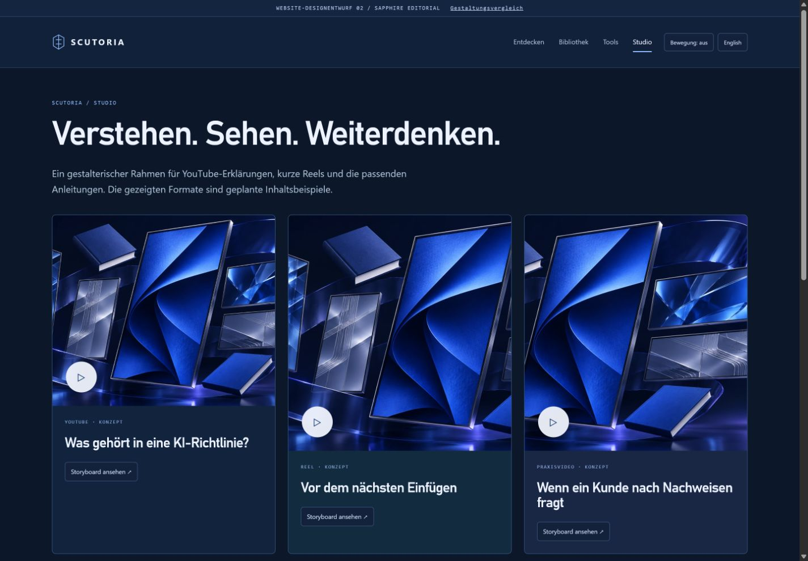

Ruhige geteilte Startseite, klare Typografie und stärkerer Fokus auf digitale Publikationen.






Lokaler Designprototyp · zusätzliche Katalogtitel und Medienformate sind Konzepte · Animationen in den HTML-Varianten.